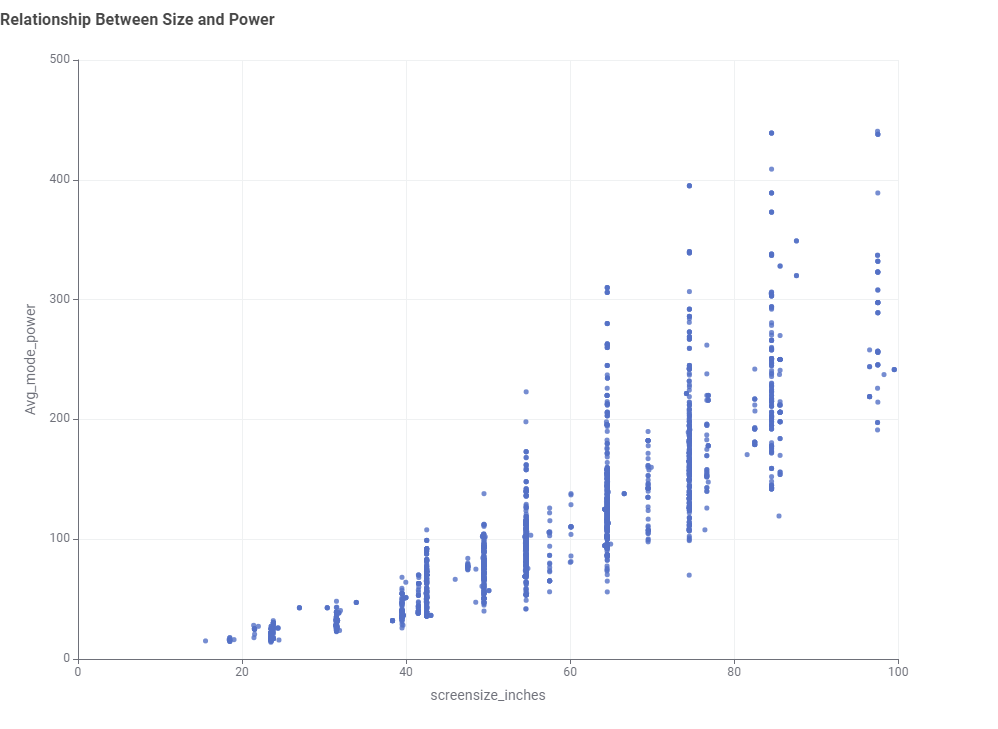
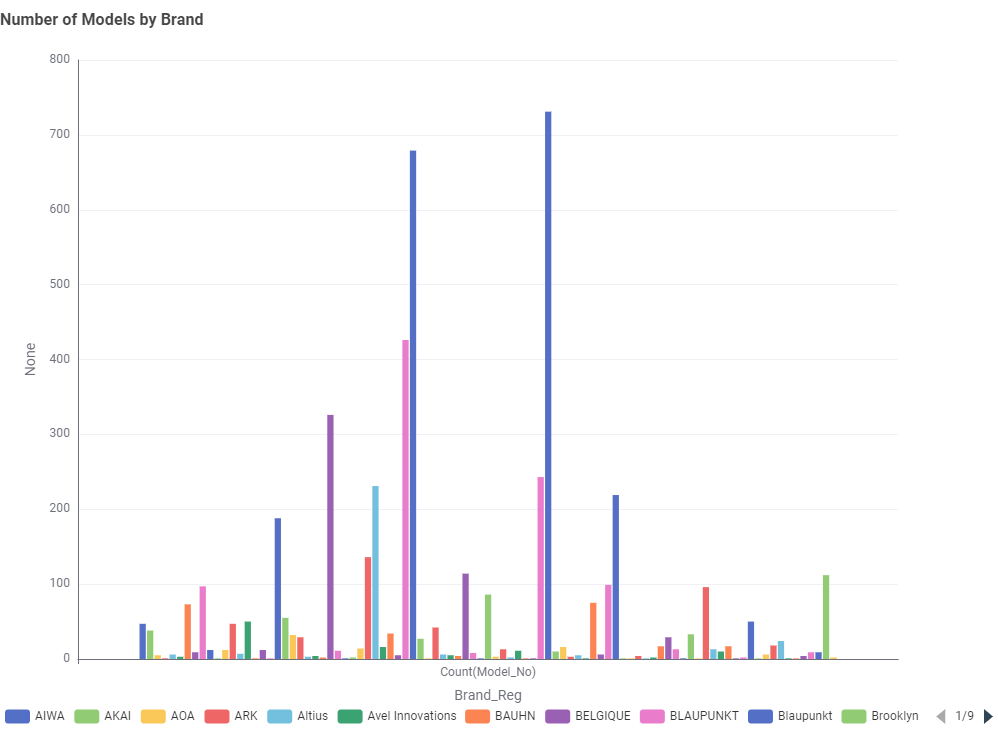

The Bigger the Screen, The Bigger the Bill
Our analysis of Australian government data shows a direct link between size and power. As you can see in the chart below, once you pass 65 inches, power consumption climbs steeply.

Tip: A 55-inch model often provides the best "sweet spot" for value.
Which Brands Give You More Choice?
While Samsung and LG lead in variety, budget-friendly brands often offer highly efficient alternatives.
